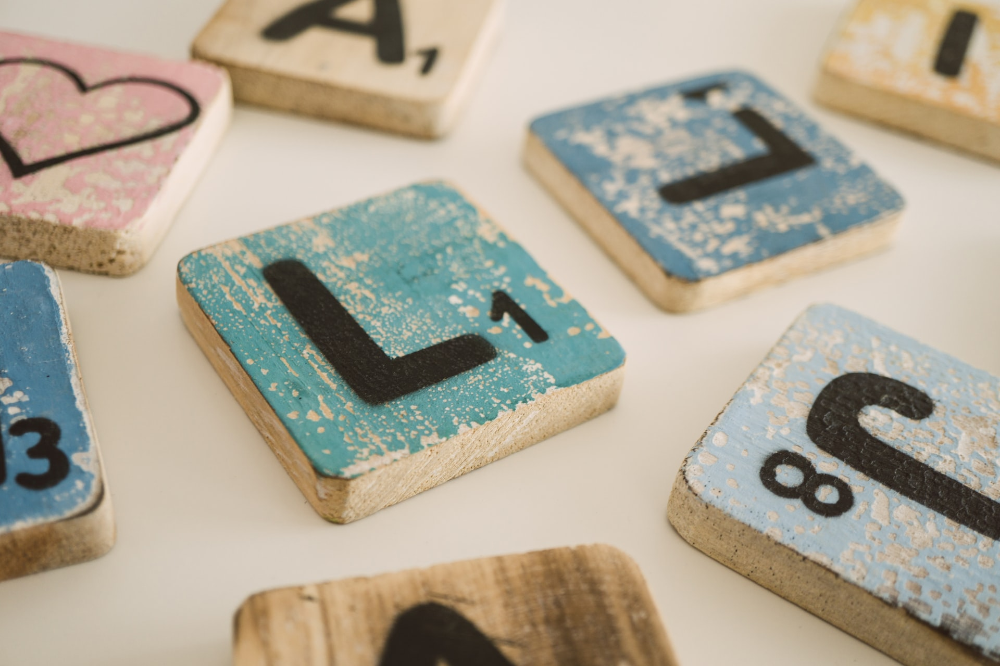

[Project Portfolio]
Viewing Party: backend logic for an application that provides a way to compare watched lists, favorites lists, and watchlists with friends and family.

Adagrams: backend logic for a game in which a player is given a random set of letters and must make an anagram using those letters.